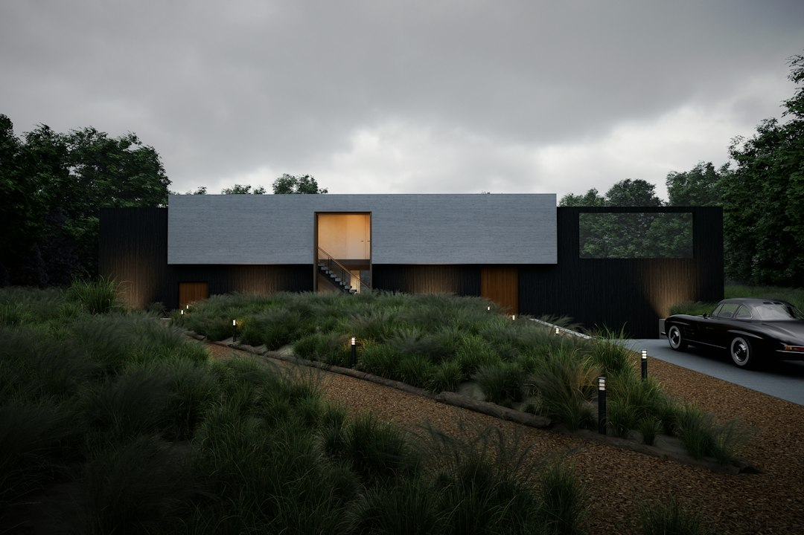

Come rivoluzionare il rendering architettonico: il futuro dei professionisti con Forma & Materia

Innovazione nel Rendering Architettonico: Analisi e Prospettive per Architetti, Interior Designer, Geometri e Ingegneri Edili
- Il rendering tradizionale presenta costi elevati e tempi lunghi che limitano flessibilità e competitività.
- L’evoluzione tecnologica porta soluzioni di rendering neurale in grado di trasformare schizzi e disegni CAD in immagini 4K fotorealistiche in pochi secondi.
- Forma & Materia di RM Studio è la soluzione SaaS che elimina i colli di bottiglia operativi e riduce i costi, facilitando la comunicazione con il cliente e la rapidità delle variazioni.
Analisi Approfondita della Notizia e Implicazioni Operative
Il settore dell’architettura e del design si trova a un bivio cruciale: la crescente complessità dei progetti e le aspettative di clienti sempre più esigenti impongono un’efficienza superiore nella comunicazione visiva. Il rendering, strumento chiave per presentare proposte progettuali, rappresenta al contempo una sfida significativa a causa dei costi elevati e dei tempi di attesa che rallentano l’intero processo decisionale. Attualmente, i professionisti del settore si affidano spesso a renderisti esterni, pagando cifre che possono superare i 500€ per ogni tavola e subendo attese fino a 5 giorni per ogni variazione richiesta. Questo scenario limita la capacità di sperimentare varianti durante gli incontri con il cliente, compromettendo la qualità del servizio e la soddisfazione finale.
Nei prossimi 24 mesi, sarà fondamentale per studi di progettazione, architetti e ingegneri adottare strumenti che consentano di accorciare i cicli di revisione e di diminuire i costi, migliorando al contempo la qualità delle visualizzazioni e l’interattività con il cliente.
Le Conseguenze e i Costi di Non Agire
Non innovare significa esporre il proprio studio a costi operativi insostenibili e a un processo decisionale macchinoso. I 500€ a tavola richiesti dai renderisti esterni rappresentano una voce di spesa fissa che, nel medio-lungo termine, incide pesantemente sul margine di profitto. I tempi di attesa di 5 giorni per ottenere una variante, inoltre, bloccano la fluidità dei confronti e provocano insoddisfazione, con rischi concreti di perdita di clienti a favore di competitor più rapidi e tecnologicamente aggiornati.
La mancanza di possibilità di mostrare modifiche dal vivo durante la presentazione al cliente fa perdere un vantaggio competitivo: l’immediata capacità di adattamento e personalizzazione del progetto, cruciale in mercati di fascia alta e segmenti premium.
Come Forma & Materia Risolve il Problema
RM Studio ha sviluppato Forma & Materia, un software SaaS che introduce un motore neurale di rendering 4K in grado di rivoluzionare il modo di creare visualizzazioni. La tecnologia trasforma schizzi a mano libera, planimetrie e disegni CAD in render fotorealistici in soli 20 secondi. Grazie alla capacità di preservare con precisione la geometria esistente e interpretare note, frecce e annotazioni scritte a penna sul supporto cartaceo, gli studi di progettazione sono in grado di accelerare notevolmente il processo di revisione e personalizzazione.
Con Forma & Materia, le modifiche possono essere visualizzate e discusse in tempo reale con il cliente, rendendo gli incontri più efficaci e aumentando la fiducia nella proposta. L’eliminazione del ricorso a renderisti esterni non solo riduce drasticamente i costi, ma permette anche di gestire internamente tutta la produzione delle tavole renderizzate, aumentando la produttività e la qualità complessiva del servizio offerto.
| Aspetti | Gestione Tradizionale | Con Forma & Materia |
|---|---|---|
| Costo per tavola | Circa 500€ a tavola | Da €16 contemporaneamente (pacchetto 6 render a €99) |
| Tempo di attesa per variante | Fino a 5 giorni | 20 secondi per render fotorealistico |
| Visualizzazione modifiche dal vivo | Non possibile | Modifiche visibili in tempo reale durante l’incontro |
| Accessibilità e integrazione | Dipendenza da terzi, processi manuali | Piattaforma SaaS integrabile con CAD e schizzi manuali |
| Qualità finale | Spesso limitata da tempi e risorse | Render 4K fotorealistici perfettamente dettagliati |
💡 Ti è stato utile questo approfondimento?
Condividilo con un collega o un amico del settore Architetti, Interior Designer, Geometri, Ingegneri Edili e Studi di Progettazione a cui potrebbe interessare!
FAQ - Domande Frequenti
1. Quanto tempo richiede in media un render con Forma & Materia rispetto ai metodi tradizionali?
Con Forma & Materia il rendering 4K fotorealistico viene generato in appena 20 secondi, contro i 3-5 giorni necessari con i renderisti esterni tradizionali.
2. È necessario disporre di competenze specifiche per utilizzare il software?
No, Forma & Materia è pensato per essere intuitivo e integrabile con schizzi manuali e disegni CAD, facilitando l’adozione senza bisogno di training intensivi.
3. Quali sono le opzioni di acquisto disponibili per studi e professionisti?
È possibile scegliere tra il Progetto Singolo da €99 che include 6 render o l’Atelier Pro a €249 con 20 render 4K, entrambi con un render di prova gratuito.
Inizia Subito
Progetto Singolo da €99 (6 render) o Atelier Pro a €249 (20 render 4K). 1 Render di prova gratuito su https://formamateria.rmstudio.app/studio
Fonti Ufficiali e Risorse Esterne
Scopri l'Intelligenza Artificiale per la tua attività
Ottimizza i processi e aumenta le vendite con le soluzioni B2B di RM Studio.
Scopri Forma & Materia